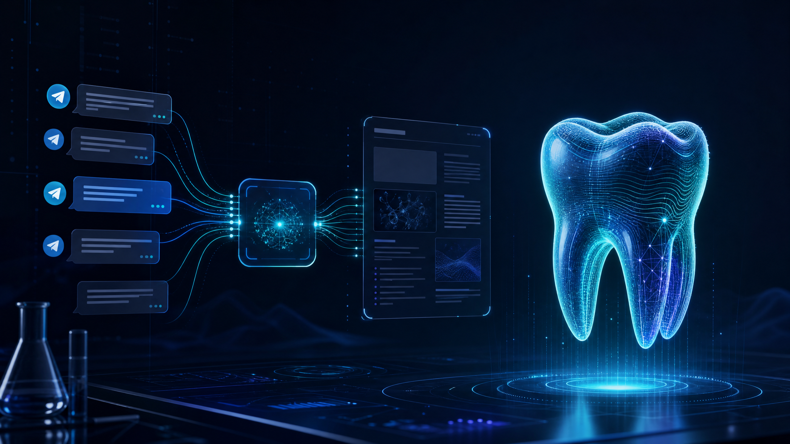

From clinical conversations to structured knowledge
StomChat connects secure Telegram intake, media-aware analysis, research context, and digest-ready summaries in one operational workflow for dental teams.

Engineered for Clinical Chat Intelligence
High-concurrency async pipeline handling MTProto streams, medical computer vision, and structured article publishing.
Hybrid MTProto Userbot + Bot
Uses Telethon MTProto to listen seamlessly to target dental groups without missing media attachments, while a secondary bot client handles channel publishing.
Gemini 1.5 Vision & OpenCV
Automatically isolates keyframes from uploaded clinical MP4 videos using OpenCV/FFmpeg and feeds dental X-rays & photos into Gemini 1.5 Vision multi-key rotation pools.
Agentic Fact-Checking Engine
Integrates Tavily and DuckDuckGo search workers to verify medical claims made in discussions, citing peer-reviewed dental literature automatically.
Telegraph Digest Publisher
Formats raw daily/weekly discussions into beautifully rendered web articles via html-telegraph-poster and posts instant preview links to channels.
Multi-Key Failover & Cooldowns
Built-in gemini_client.py engine manages API quota rotation across multiple keys with exponential backoff on HTTP 429 and rate limits.
Async SQLite & Taxonomy
Powered by aiosqlite and specialized dental vocabulary dictionaries (dental_vocab.py) for fast keyword categorization and case tracking.
Deep Technical Architecture
Inspect exact codebase modules powering StomChat
⚡ Interactive StomChat Case Pipeline Simulator
● Real-Time Agent SimulationClinical discussion captured from Telegram MTProto stream: